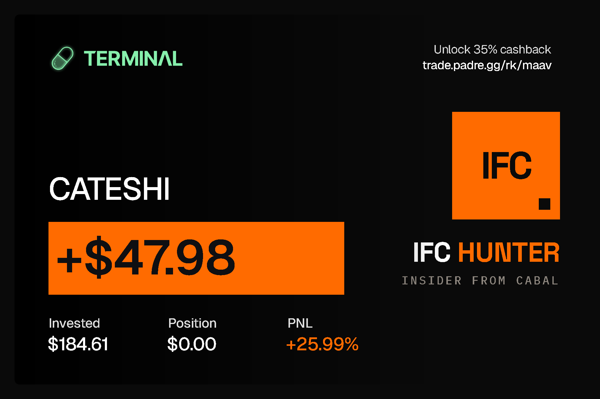

01
Wallet flow
Withheld. This part of the method stays private.
IFC Hunter — Insider From Cabal. A real-time Solana scanner that ranks every new memecoin by how closely it matches the next public call of a known group.
■ 15 s refresh ■ 12 groups tracked ■ 256 calls dated ■ private build ■ by MAAV ■
New launches from pump.fun and DexScreener, pulled every 15 seconds, filtered on age and market cap.
Each group's past calls define its own fingerprint. Measured, never guessed.
One button opens a hunt: tracked wallets polled live, every candidate ranked.
A Telegram ping when signals converge. Every round of the ranking is kept.
Seven sessions so far, misses included. Two of the four were checked afterwards, by replaying the session through the actual code.
Withheld. This part of the method stays private.
Withheld. Nice try, it is not in the source either.
Withheld. Measured on every past call, kept private.
Withheld. Ask again after the next call.
Withheld. The details are the edge.

Every deploy replays real past calls. One ranks worse, the release is blocked.
Cheap signature reads first, paid parsing only on the window that matters.
One server writes, every other machine reads. Nothing faces the open internet.